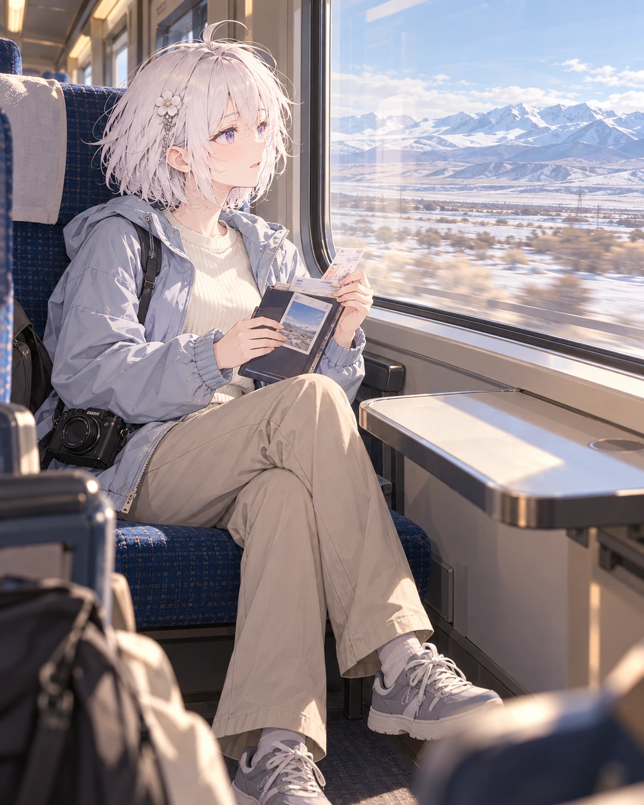
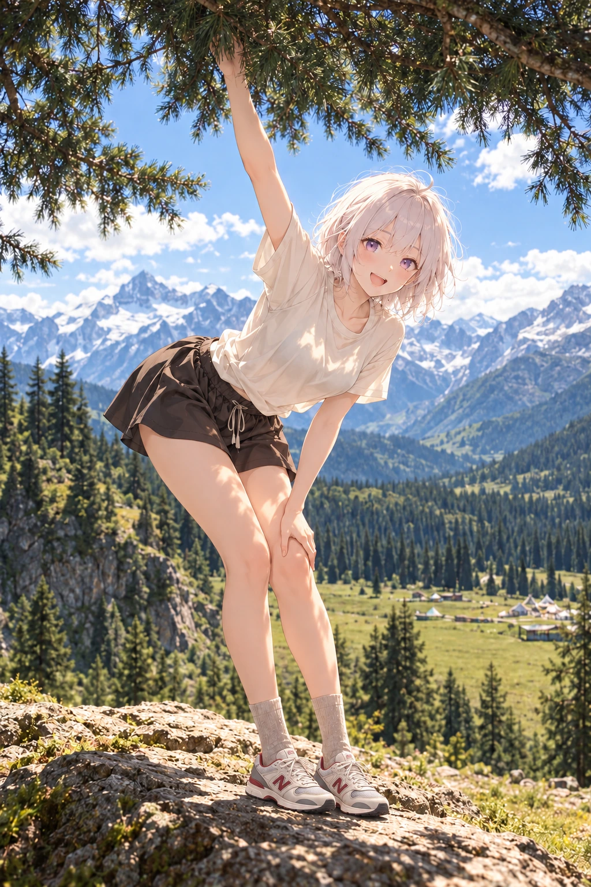
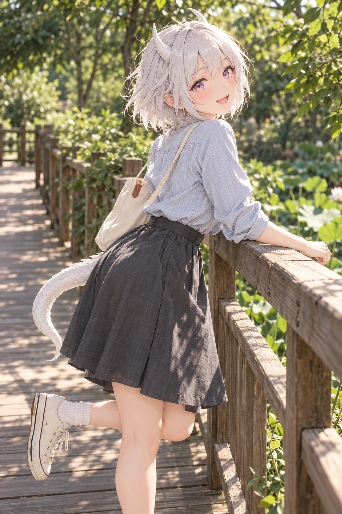

路上还有下一页
2026年10月23日的创作线索
自己挑路
站台是出发的地方
车窗 山路 栈道 是走在路上的不同片刻
她可以等车 看地图 停下来歇脚
也可以先发现远处的风景 再转身招呼同行的人
衣服要适合这一天
走山路时 穿能好好落地的运动鞋
天气冷就加一件外套 包里也可以装着真正要用的东西
旅行的轻快 不需要靠危险的位置或悬空的身体来证明
一条稳稳当当的路 一个还想向前的表情 已经足够
创作札记 依据2026年10月23日角色日记与既有作品整理
相关画面



